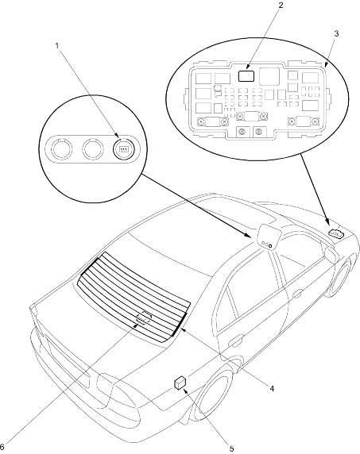

|
- REAR WINDOW DEFOGGER SWITCH
- REAR WINDOW DEFOGGER RELAY
Test, page 22-80
- UNDER - HOOD FUSE/RELAY BOX
- REAR WINDOW DEFOGGER
Function Test, page 22-162
Defogger Wire Repair, page 22-212
- SUB - WINDOW ANTENNA COIL
(Sedan of KG and KE models)
Test, page 22-163
- WINDOW ANTENNA COIL
Test, page 22-163
|